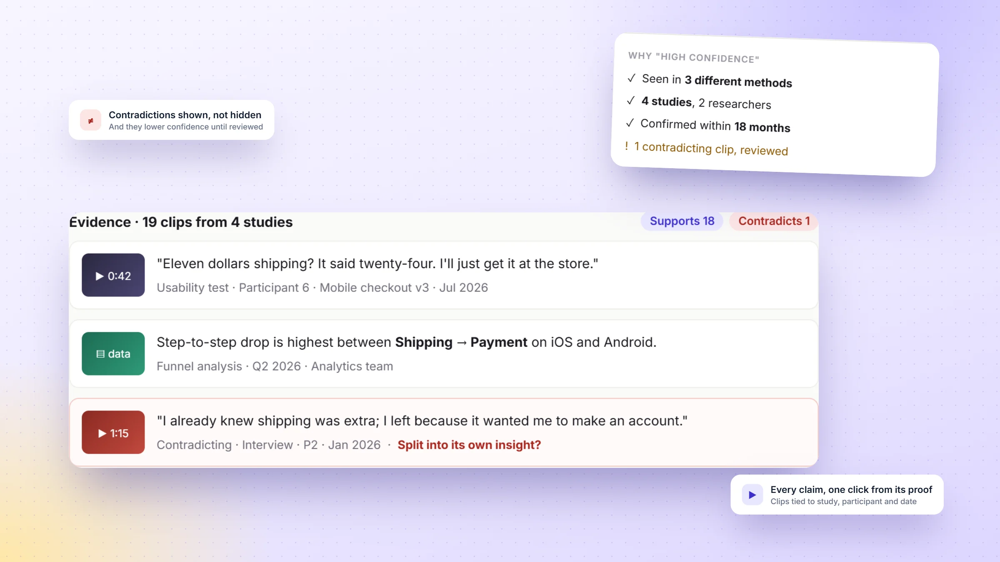
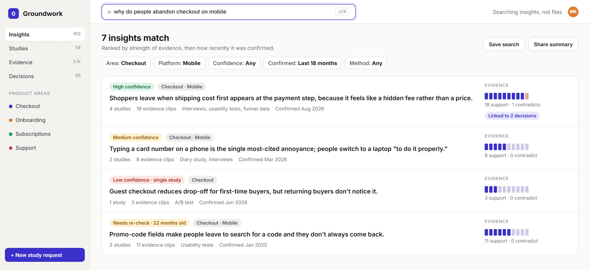
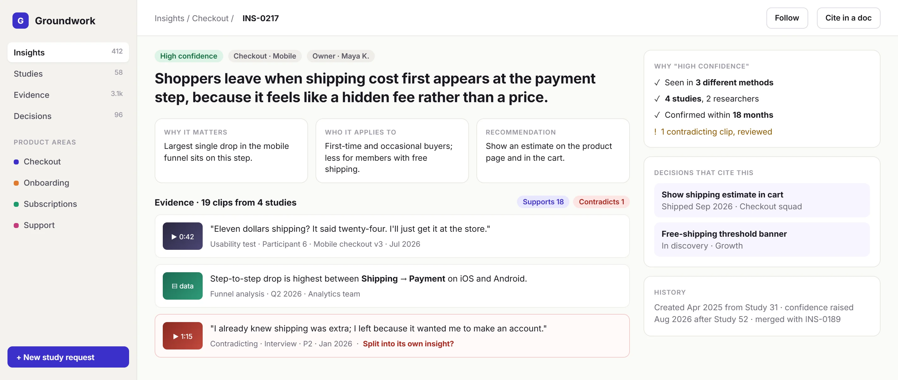
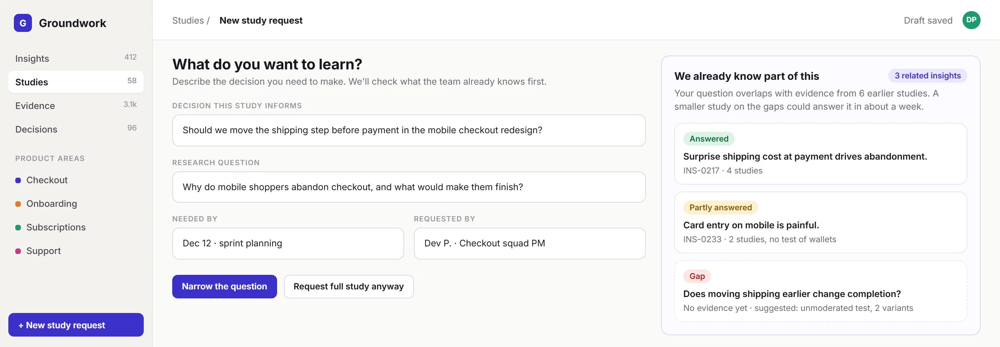

Concept projectThis is a design study of a common problem in research operations. I didn't interview teams for it; the problem framing draws on how research is typically stored and shared, and the validation plan shows how I'd test it. Every study, insight, quote and person in the screens is fictional.
Overview
Long story short
Context
Product teams run research constantly: interviews, usability tests, surveys, analytics. The results end up as decks and documents in shared drives, named by study and date.
Problem
Findings are stored by when they were learned, but people look for them by what they need to decide. So teams can't find what's known, re-run studies they've already done, and quote findings with no sense of how strong the evidence is.
My role
Designed the information model, with evidence, insights and decisions as linked objects.
Wrote explicit confidence rules and a governance model so the repository stays trustworthy over time.
Designed search, insight detail and study intake, and wrote the decision log and validation plan.
Solution
A repository where the unit is an insight, backed by clips of evidence from many studies, rated by visible confidence rules, linked to the decisions it informed, and checked automatically when someone requests a new study.
Deliverables
Object model, confidence rubric, governance roles, decision log, 3 high-fidelity screens, edge-case behavior, validation plan and metrics.
The problem
Research that can't be found might as well not exist
A finding in a slide deck has three weaknesses. It's hard to find unless you know which study it came from. It's cut off from its evidence, so nobody can check it. And it's frozen in time: nothing tells a reader whether it's been confirmed, contradicted or superseded since.
01
Stored by study, searched by question
A PM asks "why do people abandon checkout?" The answer is spread across four studies with four different names.
02
Findings travel without their evidence
A quote from one participant becomes "users want X" three meetings later. Nobody can see how much it rests on.
03
New studies start from zero
Without an easy way to check what's known, teams commission research that repeats old work, and researchers lose time to it.
How might we
How might we make what a team has learned easy to find by question, honest about its strength, and the first thing checked before new research begins?
Information model
The core design is the data model, not the screens
I started with the objects and how they relate, because every screen and every search depends on them. The key idea, sometimes called "atomic" research, is to break findings into small linked units: a single piece of evidence can support many insights, and an insight can draw on many studies.
EvidenceOne observation: a video clip, a quote, a data point. Always tied to its study, participant ID and date.
→
InsightA statement of what we believe and why, backed by evidence from one or more studies, with a confidence level.
→
DecisionWhat the team did because of it. Linking back closes the loop and shows research's impact.
Object
Key fields
Relationships
Who creates it
Study
Question, method, dates, participants (counts, not identities)
Has many evidence clips
Researcher
Evidence
Clip or quote, participant ID, timestamp, tags
Belongs to one study; supports or contradicts many insights
Researcher, during synthesis
Insight
Statement, who it applies to, recommendation, owner, last confirmed
Built from evidence; cited by decisions; can merge or split
Researcher; others can suggest
Decision
What was decided, by whom, status
Cites one or more insights
PMs and designers
Confidence rules
"High confidence" has to mean something
A confidence label people can't explain is just decoration. So the levels follow written rules, shown on every insight, and they change automatically as evidence is added or ages.
Level
Rule
What it's safe to use it for
High
At least 3 studies, at least 2 methods, confirmed within 18 months, contradictions reviewed
Roadmap decisions and executive summaries
Medium
2 studies, or 1 study with strong mixed-method evidence
Design direction, with a plan to confirm
Low
A single study or a single method
A hypothesis worth testing, not a fact
Needs re-check
Not confirmed in 18 months, whatever its level was
Background only, until someone confirms it
The thresholds are a starting point. Validation would tune them with researchers.
Decision log
Three choices, and what I gave up
Decision 01
What should the basic unit of the repository be?
Reports and filesEasy to adopt because it's what teams already have. But it keeps the problem: you search by study, not by question.
Tagged highlightsBetter, but thousands of tags without statements leave readers to do the synthesis themselves.
Insights backed by evidenceA readable statement first, then the clips that prove it, from every study that touched it.
WhyPeople arrive with a question and want an answer they can trust. An insight is an answer; its evidence is the trust.
Trade-off acceptedMore work for researchers during synthesis. Governance and the intake check have to make that work visibly worthwhile.
Decision 02
Who decides how confident an insight is?
The researcher, by judgmentFlexible, but labels drift between people and nobody can explain them later.
Written rules, shown on the insightStudies, methods, recency and contradictions decide the level, and the reasons are listed.
A computed score out of 100Looks precise, but implies more accuracy than the method has.
WhyRules are consistent and explainable to a PM in one glance ("seen in 3 methods, 4 studies").
Trade-off acceptedRules can't weigh a brilliant single study against weak ones. Owners can add a note, but can't override the level.
Decision 03
How strongly should intake push back on new study requests?
No checkFastest to request, and repeats keep happening.
Block requests that overlapPrevents repeats, but feels like gatekeeping and pushes people around the tool.
Show what's known, suggest a narrower study"We already know part of this", with answered, partial and open gaps, and a "request anyway" option.
WhyThe person requesting is usually right that they need answers, just not all of them. Showing gaps turns a big study into a small one.
Trade-off acceptedSome repeats will still happen. Tracking how often "narrow the question" is chosen tells us if it works.

Spotlight · Honest evidenceSupporting and contradicting clips sit together, and the confidence rules are spelled out.
Design
Find, trust, then build on it
Find · Search
Ask a question, get insights, not files

A
Natural-language search"Why do people abandon checkout on mobile," matched against insight statements, not file names.
B
Ranked by evidence strengthThen by how recently each insight was confirmed. The ranking rule is stated on screen.
C
Evidence at a glanceA bar of supporting and contradicting clips, so weak insights look weak.
D
Staleness is visible"Needs re-check · 22 months old" keeps old findings from passing as current.
Trust · Insight detail
Every claim, one click from its proof

A
Three questions answered up topWhy it matters, who it applies to, and what to do about it.
B
Contradicting evidence is shown, not hiddenIt's styled differently and can be split into its own insight.
C
Confidence, explainedThe rules that earned "high" are listed as a checklist.
D
Decisions that cite itShows research's impact, and who to tell if the insight changes.
Build on it · Study intake
Before a new study, see what's already known

A
Start from the decision"What decision does this inform?" comes before the research question, so studies stay tied to outcomes.
B
Answered, partial, gapThe request is checked against existing insights as it's typed.
C
A suggestion, not a block"Narrow the question" is primary; "Request full study anyway" is always there.
Visual language
A look that does a job
A research tool should feel like a well-kept library: warm paper, one confident indigo, and a three-color confidence scale that reads the same everywhere it appears.
Indigo#3b2fc9Primary, evidence
Ink#18181fText
Paper#fafaf8Background
High#126b3cHigh confidence
Medium#8a5600Medium, needs re-check
Low#a8261dLow, contradicting
Typeface
Aa
Inter
Title 30Heading 17Body 14 · the default reading sizeCaption 12 · sources and timestamps
Insights are set as sentences at 15–23px, because they are meant to be read and quoted, not scanned as tags.
Components
High confidenceNeeds re-check · 22 months oldLow · single study
Evidence bar · support vs. contradiction
▶ 0:42"Eleven dollars shipping? I'll just get it at the store."
Narrow the questionRequest full study anyway
Edge cases
Where repositories usually fail
Evidence contradicts a popular insight
Risk: it's quietly ignored.
Behavior: contradictions always show, lower the level until reviewed, and notify the owner and the teams whose decisions cite it.
Two researchers create the same insight
Risk: duplicates split the evidence.
Behavior: similar statements are flagged on creation, with a merge that keeps both histories.
A clip contains personal information
Risk: a participant's privacy is exposed company-wide.
Behavior: clips use participant IDs only; faces can be blurred, and consent scope is stored with the study and enforced on sharing.
An insight's owner leaves the company
Risk: nobody maintains it.
Behavior: ownership moves to the area's research lead, and unowned insights are listed for review.
Governance
A repository is a product that needs owners
Most repositories don't fail on launch day; they decay. So the design includes the people and rituals that keep it alive, not just the software.
01Insight owners
Every insight has one named owner who reviews contradictions and re-checks it when it ages.
02Area research leads
Own the insights for a product area, and run a monthly 30-minute review of stale and contradicted ones.
03Contributors
PMs and designers can suggest insights and log decisions; researchers approve them.
04Synthesis as done
A study counts as finished when its insights are in Groundwork, not when the deck is presented.
Validation plan
How I'd test it
Question
Method
Participants
We'd keep going if…
How do teams look for past research today?
Interviews plus a walkthrough of their real drives and tools
6 researchers, 6 PMs or designers
Searching by question, and failing, comes up consistently
Does the object model match how researchers synthesize?
Researchers re-enter one real past study into a prototype
5 researchers
They can do it without changing what they concluded
Can PMs find and judge an answer?
Tree test and search task on a seeded repository
15 PMs and designers
Most find the right insight and correctly say how strong it is
Do confidence rules agree with experts?
Researchers rate 20 insights blind, then compare with the rules
4 senior researchers
Agreement on most insights; disagreements show which rule to tune
Success metrics
What I'd measure after launch
North star
Share of product decisions that cite at least one insight
It measures whether research is used, not just stored.
Leading signals
Searches by people outside the research team
Study requests narrowed after the intake check
Studies whose insights are entered within 2 weeks
Guardrails
Share of insights that need re-checking
Contradictions left unreviewed for over a month
Researcher time spent on upkeep each week
Reflection
What this project taught me
Information architecture is product strategy
Choosing "insight" as the unit decided what search could do, what confidence meant and how impact gets measured.
Honesty about evidence is a feature
Showing weak and contradicted insights plainly makes the strong ones more believable.
Tools don't fix habits alone
The governance roles matter as much as the screens. I'd pilot them with one team before building more features.